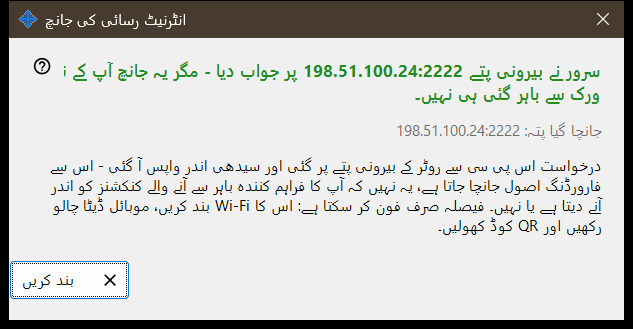
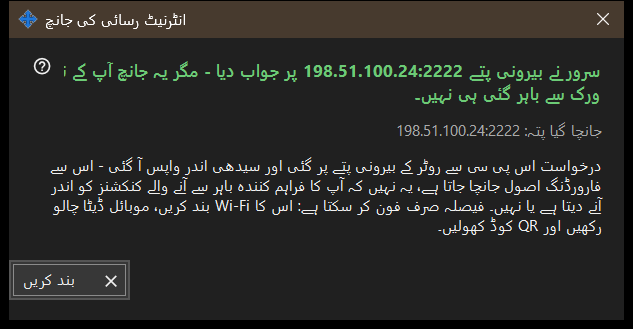

انٹرنیٹ رسائی کی جانچ
یہ کس مقصد کے لیے ہے
اس پی سی سے جانچتی ہے کہ شیئر کیا گیا پتہ SFTP سرور کی طرح جواب دیتا ہے یا نہیں۔ یہ مرکزی ونڈو کے انٹرنیٹ رسائی جانچیں بٹن سے کھلتی ہے اور جو پتہ پرکھ رہی ہے، ایک فیصلہ اور وضاحت دکھاتی ہے۔


اس ترتیب میں
- ونڈو کھولیں؛ یہ پتہ دکھاتی ہے اور جانچ فوراً شروع کرتی ہے۔
- سرخی کے آنے کا انتظار کریں۔
- اس کے نیچے کی تفصیل کی لائن پڑھیں۔
- اگر نتیجہ حتمی نہ ہو تو Wi-Fi بند اور موبائل ڈیٹا آن کرکے فون سے جانچ دہرائیں۔
- بند کریں دبائیں۔
عناصر
جانچا گیا پتہ
جانچا گیا پتہ: .. ہوسٹ اور پورٹ دکھاتا ہے۔ جانچ چلنے کے دوران ونڈو کہتی ہے: جانچ .. ۔ اگر کوئی پتہ معلوم نہ ہو تو نتیجہ ہے: ابھی کوئی انٹرنیٹ پتہ نہیں۔ بگڑا ہوا پتہ دیتا ہے: پتہ غلط ہے۔
فیصلے
SFTP سرور قابلِ رسائی - پورٹ نے SFTP بینر کے ساتھ جواب دیا۔ پورٹ کھلا ہے مگر SFTP نے جواب نہیں دیا - پورٹ پر کچھ سن رہا ہے، مگر وہ ہمارا پروگرام نہیں؛ دیکھیں کہ روٹر کا اصول اس پی سی اور شیئر کے پورٹ تک جاتا ہے۔ جواب سے پہلے کنکشن کا بند ہو جانا کنکشنز کی حد کی علامت ہو سکتا ہے؛ دوبارہ کوشش کریں۔ اس پی سی سے کوئی جواب نہ آنے کا مطلب ہے کہ روٹر اندر سے اپنا ہی پتہ روک سکتا ہے۔
نتیجہ حتمی کیوں نہیں ہو سکتا
درخواست اس پی سی سے روٹر کے بیرونی پتے کی طرف جاتی ہے اور سیدھی اندر لوٹ آتی ہے، اس لیے وہ فارورڈنگ کے اصول کو پرکھتی ہے، یہ نہیں کہ فراہم کنندہ باہر سے آنے والے کنکشن آنے دیتا ہے یا نہیں۔ اسے صرف فون طے کر سکتا ہے: اس کا Wi-Fi بند کریں، موبائل ڈیٹا چلتا رہنے دیں اور QR کوڈ کھولیں۔ پھر بھی نہ جڑے تو انٹرنیٹ رسائی کیسے ترتیب دیں بٹن سے پورٹ فارورڈنگ ترتیب دیں۔
مینیجر کی ترتیبات · SFTP اشتراک کی ترتیبات · ایکسچینج سرور کی ترتیبات